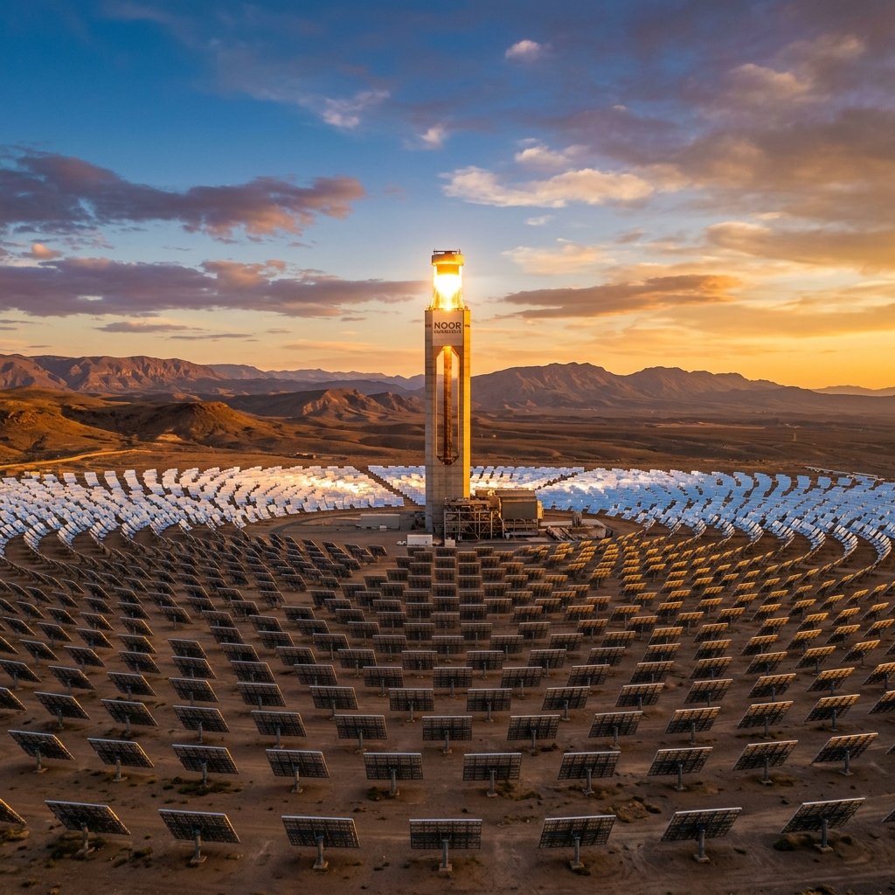

.png)

عندما نتحدث عن الانتقال الطاقي والاستدامة في المغرب، فإن الأرقام التي تتصدر العناوين عادة ما تكون مبهرة. تشير الحكومة إلى أن 46% من القدرة الكهربائية المركبة تأتي من مصادر متجددة - وهو رقم يضع المغرب بين الدول الرائدة في إفريقيا. ويقف مجمع نور ورزازات للطاقة الشمسية، ببرجه المركزي البالغ ارتفاعه 247 متراً، كرمز عالمي لطموح الطاقة النظيفة.
لكن يظهر هنا التباين الذي يحدد الواقع الطاقي في المغرب اليوم: القدرة المركبة ليست هي الإنتاج الفعلي.
في عام 2022، أنتج المغرب ما يقرب من 43 تيراواط/ساعة من الكهرباء، ولكن بسبب عدم كفاءة الشبكة، لم يصل سوى حوالي 38 تيراواط/ساعة إلى المستخدمين النهائيين. وعلى الرغم من التوسع الواضح في مزارع الرياح والطاقة الشمسية، إلا أن الوقود الأحفوري لا يزال يولد 83% من الكهرباء في عام 2022، حيث مثل الفحم وحده ما يقرب من 60% من المزيج الطاقي في عام 2024. وفي نهاية المطاف، مقارنة بكل ما يستهلكه المغاربة (من ديزل السيارات إلى غاز البوتان في المطابخ)، فإن مصادر الطاقة المتجددة تمثل بالكاد 4% من إجمالي استهلاك الطاقة الوطني.
وهذا الفارق بين الطموح والواقع هو نقطة البداية لفهم ما يعنيه الانتقال الطاقي والاستدامة في المغرب بالفعل لاقتصاده وأسره وصناعاته.
استراتيجية مبنية على ثلاث ركائز
تستند الاستراتيجية الطاقية الوطنية للمغرب، التي أطلقت في عام 2009، إلى ثلاث ركائز: توسيع قدرة الطاقة المتجددة، وتحسين كفاءة الطاقة بنسبة 20% بحلول عام 2030، وتعزيز التكامل الإقليمي من خلال الربط الكهربائي مع أوروبا وإفريقيا جنوب الصحراء.
ومن هذا المنطلق، وضعت الدولة أهدافاً طموحة للغاية بموجب المعايير العالمية: الوصول إلى 52% من قدرة الكهرباء المتجددة بحلول عام 2030، وتم تعديلها صعوداً إلى 56% بحلول عام 2027، مع التزام مشروط بالتخلص التدريجي الكامل من طاقة الفحم بحلول عام 2040. ويجري حالياً تنفيذ برنامج استثماري بقيمة 12 مليار دولار للفترة 2025-2030، مع خطط لبناء ما يقرب من 16 جيجاواط من القدرة الإنتاجية الجديدة، 80% منها ستأتي من مصادر متجددة.
لماذا لا تزال الطاقة المتجددة غير كافية من الناحية العملية؟
التحدي الرئيسي يكمن في دمج هذه الطاقات. لقد بنى المغرب مشاريع كبرى، لكن الشبكة التي تربطها بالبيوت والشركات لم تواكب نفس الوتيرة.
إن خط النقل الذي يربط المقاطعات الجنوبية، حيث توجد معظم طاقة الرياح والطاقة الشمسية الجديدة، مشبع بالفعل. وحتى تدخل خطوط الجهد العالي الجديدة حيز الخدمة، ستظل بعض هذه الطاقة النظيفة غير مستغلة.
هناك أيضاً قضايا هيكلية أعمق. يشير تقييم الحكومة الخاص بالأداء المناخي إلى ثغرات واضحة في التنفيذ: توجد معايير لكفاءة المباني، لكنها تفتقر إلى الموارد اللازمة للمراقبة؛ ولا تزال الأجهزة المستهلكة للطاقة بكثافة متاحة على نطاق واسع؛ كما تباطأت وتيرة تطوير الطاقة الشمسية والرياح بسبب خلافات تكنولوجية وتأخيرات في طلبات العروض.
وربما يكون العائق الأكثر حرجاً تمويلياً. يقدر الخبراء أن جذب ما بين 1 إلى 2 مليار دولار إضافي من الاستثمارات الخاصة سيكون ضرورياً لتسريع المرحلة التالية من الانتقال الطاقي والاستدامة في المغرب.
الارتباط بالوقود الأحفوري
وراء الدفع بالطاقة المتجددة، يظل نظام الطاقة في المغرب مرتبطاً بالوقود الأحفوري المستورد. حيث يأتي ما يقرب من 90% من إمدادات الطاقة في البلاد من الخارج، مما يجعل الاقتصاد عرضة لصدمات الأسعار العالمية.
ولا يزال الفحم يوفر الطاقة الأساسية التي تحافظ على استقرار الشبكة. لكن الوقود الأحفوري يمتد إلى ما هو أبعد من الكهرباء: فالديزل يغذي وسائل النقل، والفيول الثقيل يدير الصناعة، وغاز البوتان يسخن المنازل ويشغل المطابخ. هذه هي أنواع الوقود التي تعتمد عليها الأسر والشركات فعلياً، وهي بالتحديد الأكثر صعوبة في الاستبدال.
هذا الاعتماد ليس فنياً فحسب، بل هو أيضاً سياسي واقتصادي. وتظل إعانات الوقود حساسة سياسياً، وقد كافحت الحكومة لإلغائها نظراً للاستخدام الواسع النطاق لغاز البوتان بين الأسر المغربية.
أين يحدث الانتقال بالفعل؟
وعلى الرغم من هذه القيود، فإن الزخم يتسارع في مجالات عدة.
في المقاطعات الجنوبية، تتكاثر المشاريع واسعة النطاق. وبحلول نهاية عام 2024، مثلت هذه المناطق حوالي 25% من قدرة الطاقة المتجددة المركبة في المغرب، مع تشغيل أكثر من 1.3 جيجاواط والتخطيط لـ 1.4 جيجاواط إضافية بحلول عام 2027. وتغذي محطة طرفاية للرياح، التي تضم 131 توربيناً بقدرة 300 ميجاواط، ما يعادل 1.5 مليون أسرة بالفعل.
وفي الأفق، يجتذب الهيدروجين الأخضر استثمارات جادة. وقد تم اختيار سبعة تحالفات دولية لتطوير مشاريع في الأقاليم الجنوبية، مع توقعات بوصول القدرة الإجمالية إلى 10 جيجاواط من أجهزة التحليل الكهربائي لإنتاج الأمونيا الخضراء والوقود الاصطناعي والصلب الأخضر لأسواق التصدير. ويهدف مشروع "شبيكة" بالقرب من كلميم، بقيادة شركة TotalEnergies، إلى إنتاج 200,000 طن من الأمونيا الخضراء سنوياً باستخدام طاقة الرياح والشمس مع مياه البحر المحلاة.
وفي قطاع الكهرباء، وفرت طاقة الرياح والشمس ما يقرب من 25% من كهرباء البلاد في عام 2024، مقارنة بنحو 9% فقط في عام 2015. وبدأت حصة الفحم في التراجع، منخفضة من 70% في عام 2022 إلى 59% في عام 2024.
ماذا يعني هذا للأسر والشركات
الانتقال ليس أمراً مجرداً. بالنسبة للأسر المغربية، ينعكس ذلك في فواتير الكهرباء التي تستهلك بالفعل جزءاً كبيراً من الدخل؛ حيث تستهلك التدفئة والتكييف في الصيف الحار بورزازات مثلاً، حوالي خمس متوسط الدخل الشهري لبعض العائلات.
وبالنسبة للشركات، تؤثر تكلفة الطاقة وعدم اليقين بشأن الأسعار والإمدادات المستقبلية على تنافسيتها. ويقدم الانتقال نحو إنتاج الطاقة المتجددة محلياً وعوداً بتكاليف طاقة أكثر استقراراً، ولكن فقط إذا تمكن المغرب من التغلب على تحديات الشبكة والدمج التي تقف عائقاً حالياً.
فرصة اللامركزية
وهناك بديل ناشئ يمكن أن يعيد تشكيل مساهمة المغاربة في هذا الانتقال. يطالب الخبراء ومجموعات المجتمع المدني بشكل متزايد بالتحول نحو الطاقة المتجددة اللامركزية: الألواح الشمسية على الأسطح، والشبكات المحلية الصغيرة، والأنظمة المملوكة للمجتمعات المحلية والتي تسمح للأسر والشركات بإنتاج الكهرباء الخاصة بها.
ويقدر تقرير حديث صادر عن مبادرة IMAL للمناخ والتنمية أن أسطح المنازل في المغرب يمكن أن تولد ما بين 20 إلى 67 تيراواط/ساعة من الكهرباء النظيفة بحلول عام 2035، ما يعادل قدرة مركبة تتراوح بين 8.6 إلى 28.6 جيجاواط وسوقاً محتملة تصل قيمتها إلى 31 مليار دولار. ويمكن لهذه الأنظمة أن تخلق ما بين 13,000 إلى 43,000 فرصة عمل خلال العقد المقبل، مع تقليل الضغط على الشبكة المركزية وتعزيز المرونة.
ومع ذلك، لا تزال العقبات التنظيمية قائمة. فالإطار القانوني للإنتاج الذاتي (القانون 82.21) شهد تأخراً في صدور مراسيمه التطبيقية، مما خلق حالة من عدم اليقين تحد من الاستثمارات. وحتى الآن، دخلت ثلاثة مراسيم تطبيقية حيز التنفيذ (2.25.100 و 2.24.804 و 2.24.761)، ولكن لا تزال هناك نصوص تكميلية قيد الإعداد تتعلق بإجراءات الترخيص والربط الفني وشروط بيع الفائض وتخزين الطاقة لتغطية جميع أحكام القانون 82.21.
رؤية مستقبلية
يمر المغرب بمرحلة حاسمة. لقد أثبتت البلاد قدرتها على بناء بنية تحتية متطورة للطاقة المتجددة. لكن الانتقال من القدرة الاسمية إلى الاستهلاك الفعلي للطاقة النظيفة يتطلب مجموعة من التغييرات الأكثر تعقيداً: تحديث الشبكة، والإصلاحات التنظيمية، وخيارات تكنولوجية أوضح، ومشاركة أكبر من المواطنين.
ولم يعد السؤال هو ما إذا كان المغرب قادراً على بناء محطات شمسية ضخمة، بل ما إذا كان بإمكانه إعادة تصميم نظام الطاقة الخاص به حتى يتمكن المغاربة العاديون والشركات والصناعات من الوصول إلى الطاقة النظيفة المنتجة والاستفادة منها.
على مدار الأشهر القادمة، ستستكشف هذه المدونة كيف يعمل الباحثون والصناعيون وصناع القرار على سد هذه الفجوة، وما يتطلبه الأمر لجعل الانتقال الطاقي والاستدامة في المغرب واقعاً ملموساً للجميع.
هذا المقال هو الأول في سلسلة مقالات تستكشف الانتقال الطاقي والاستدامة في المغرب. سينشر المقال الثاني، حول أنظمة الطاقة اللامركزية ومشاركة الأسر، في 15 سبتمبر.